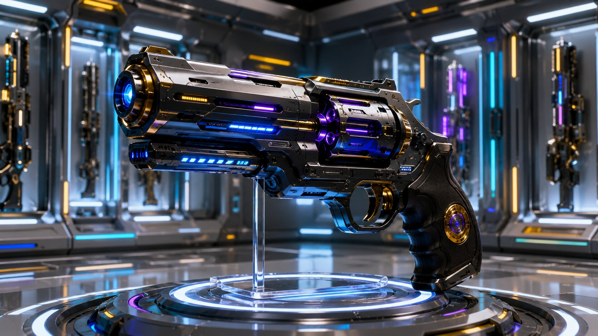

Arsenal Volt is the central armory of the Black Delta Force, a futuristic vault engineered to store and showcase the most advanced weaponry ever designed. Its architecture combines metallic resilience with luminous energy conduits, creating an environment where every firearm and tactical system is organized with absolute precision. Within its walls, plasma rifles, anti‑gravity war guns, and stealth interceptors are maintained under strict protocols, ensuring readiness at any moment. Arsenal Volt is not just a storage facility — it is the living embodiment of discipline, innovation, and technological supremacy.
Beyond its physical presence, Arsenal Volt represents the strategic backbone of the Force’s arsenal management. Every weapon is cataloged, monitored, and powered by the Morphex Tower’s cosmic energy, guaranteeing operational integrity across missions. It is here that the Red Marshal’s doctrine of order and secrecy is reinforced, where the arsenal transforms from mere hardware into a covenant of protection. Arsenal Volt ensures that the Black Delta Force remains equipped, empowered, and prepared to act with precision across every frontier.
Abyssal Harbinger Sword
Forged in Silence, Wielded in Destiny
The Abyssal Harbinger Sword is the ceremonial blade of the Black Delta Force, engineered with alloys that channel plasma energy through its core. Its design integrates wing‑like motifs and embedded gemstones, symbolizing both resilience and precision. Each strike resonates with controlled power, making it not only a weapon of combat but also a technological marvel. The blade’s construction ensures balance in motion, durability under extreme conditions, and seamless integration with the Force’s tactical systems. It is the embodiment of engineering excellence, forged to deliver precision at scale.
Beyond its technical brilliance, the Abyssal Harbinger Sword represents the oath of guardianship sworn by the Force. It is a symbol of courage, honor, and trust — carried into battle as a reminder of the Marshal’s command and the destiny of the Forbidden Sanctuary Province. Every gemstone reflects a principle: safety, honor, strength, and trust. More than a weapon, it is a covenant of justice, a reminder that the Black Delta Force stands as eternal protector of order, wielding destiny in silence yet striking with unshakable purpose.
Nightshade Urban Assault Interceptor
Silent Speed, Absolute Control
The Nightshade Urban Assault Interceptor is the Black Delta Force’s premier tactical vehicle, engineered for stealth, speed, and dominance in metropolitan combat zones. Its matte black armor, angular design, and advanced suspension system allow seamless navigation through dense urban environments. Equipped with adaptive LED arrays and reinforced tires, the Interceptor ensures operational readiness under any condition. Every component is optimized for rapid deployment, precision maneuvering, and resilience against high‑intensity threats, making it the ultimate embodiment of urban warfare technology.
Beyond its technical prowess, the Nightshade Interceptor symbolizes vigilance in the shadows. It is the unseen protector of the city, patrolling silently yet striking decisively when called upon. The vehicle represents the Marshal’s doctrine of balance — visible enough to inspire trust, yet concealed enough to maintain secrecy. In every mission, the Nightshade Interceptor stands as a covenant of guardianship, ensuring that the Black Delta Force remains the silent hand of justice across the urban frontier.
Wraith Urban
The Primary Mission Vehicle
The Wraith Urban is the Black Delta Force’s primary mission and operation vehicle, engineered to deliver unmatched performance in both metropolitan and frontier environments. Its aerodynamic frame, reinforced armor, and multi‑wheel drive system ensure stability and speed across diverse terrains. Integrated with adaptive lighting, advanced navigation, and autonomous support modules, the Wraith Urban is designed for rapid deployment and sustained missions. Every detail — from its glowing rims to its tactical communication systems — reflects precision engineering and readiness for high‑intensity operations.
More than a transport, the Wraith Urban embodies the Force’s doctrine of mobility and dominance. It is the Marshal’s spearhead in every mission, carrying troops, arsenal, and intelligence into the heart of conflict. Symbolically, the vehicle represents resilience and authority — a moving fortress that projects the Force’s presence wherever destiny calls. With its blend of speed, strength, and sovereignty, the Wraith Urban stands as the ultimate mission vehicle, ensuring that the Black Delta Force remains unstoppable across every horizon.
IDAI Guardian Sentinel
Military Missions, Vanguard Response
The IDAI Guardian Sentinel is the frontline defense and response vehicle of the Black Delta Force, engineered for heavy‑duty military missions. With eight reinforced wheels, angular armor plating, and integrated sensor arrays, it is designed to withstand the most hostile environments. Blue energy conduits illuminate its frame, symbolizing both power and precision. Every mission begins with the Sentinel — carrying troops, arsenal, and intelligence into the heart of conflict. Its advanced systems ensure rapid deployment, tactical superiority, and resilience under pressure, making it the ultimate embodiment of military readiness.
Beyond its engineering, the Guardian Sentinel represents the Force’s doctrine of protection and sovereignty. It is the Marshal’s shield on the battlefield, projecting authority and trust wherever deployed. The inscriptions of “Vanguard Response Unit” reflect its role as the first line of defense, ensuring that no threat breaches the covenant of order. More than a vehicle, the IDAI Guardian Sentinel is a moving fortress — a covenant of strength, discipline, and guardianship, securing the destiny of the Black Delta Force across every mission.
Desert Revenant
Resilience Forged in Sand and Steel
The Desert Revenant is the Black Delta Force’s specialized off‑road assault vehicle, engineered to dominate the harshest desert landscapes. Its oversized tires, engraved armor panels, and plasma‑powered headlights ensure stability and visibility across shifting sands and rocky terrain. Designed for speed and endurance, the Revenant integrates advanced cooling systems and tactical weapon mounts, allowing seamless operation under extreme heat. With armored knights at its helm, the vehicle embodies a fusion of medieval guardianship and futuristic engineering, making it the ultimate symbol of survival and strength in unforgiving environments.
Beyond its technical resilience, the Desert Revenant represents the Force’s oath of perseverance. It is the Marshal’s chariot across barren frontiers, carrying the covenant of justice into lands where survival itself is a battle. Every dust trail it leaves behind is a testament to endurance, every strike a reminder of destiny fulfilled. More than a mission vehicle, the Revenant is a living emblem of resilience — a guardian forged in sand and steel, ensuring that the Black Delta Force remains unyielding wherever the horizon stretches.
Heavy Machine Gun
Unyielding Firepower, Relentless Precision
The Heavy Machine Gun is the backbone of the Black Delta Force’s battlefield dominance, engineered for sustained fire and uncompromising reliability. Its intricate mechanical design integrates reinforced barrels, advanced cooling systems, and plasma‑powered ammunition feeds, ensuring continuous operation under extreme conditions. Mounted on tactical platforms or deployed in fortified positions, the weapon delivers overwhelming suppressive fire, neutralizing threats with relentless precision. Every component reflects durability and engineering mastery, making it the ultimate instrument of battlefield control.
Beyond its technical strength, the Heavy Machine Gun symbolizes the Force’s doctrine of authority and resilience. It is the Marshal’s voice in combat — a thunderous reminder of discipline and sovereignty. Each burst of fire represents not just tactical superiority but the covenant of protection sworn by the Black Delta Force. More than a weapon, it is a statement of power, ensuring that order is preserved and justice enforced across every frontier of the IDAI Universe.
Photon Edge Rifle
Light Forged into Lethal Precision
The Photon Edge Rifle is a masterpiece of futuristic engineering, designed to channel concentrated energy into every shot. Its metallic frame, accented with glowing neon conduits, integrates advanced scopes, modular barrels, and precision ammunition systems. Built for adaptability, the rifle can transition seamlessly between close‑quarters combat and long‑range engagements. Every component reflects resilience and innovation, ensuring that the Black Delta Force maintains superiority across diverse battlefields.
Beyond its technical brilliance, the Photon Edge Rifle embodies the Force’s philosophy of balance — light transformed into power, precision forged into guardianship. It is not merely a weapon but a symbol of vigilance, carried by the Marshal’s warriors as a covenant of justice. Each luminous strike represents discipline and sovereignty, reminding allies and adversaries alike that the Black Delta Force wields technology not just to fight, but to preserve order across the cosmic frontier.
Rivolver
Elegance in Power, Precision in Motion

The Rivolver is a futuristic sidearm of the Black Delta Force, designed to merge elegance with lethal precision. Its metallic frame, accented with gold and violet conduits, channels energy through a reinforced barrel system. Advanced optics and modular chambers allow seamless adaptation to multiple combat scenarios, from close‑quarters engagements to tactical suppression. Compact yet powerful, the Rivolver embodies the perfect balance of portability and firepower, ensuring that every strike resonates with accuracy and authority.
Beyond its engineering, the Rivolver symbolizes the Marshal’s doctrine of discipline and guardianship. It is not merely a weapon but a statement of sovereignty, carried as a reminder of vigilance and trust. Each luminous accent reflects the covenant of justice, transforming the revolver into more than a firearm — into a ceremonial emblem of the Force’s eternal mission. In every hand it rests, the Rivolver becomes a guardian’s promise, ensuring that order and destiny remain protected across the cosmic frontier.
Combat Shotgun
Close‑Range Dominance, Tactical Precision
The Combat Shotgun is the Black Delta Force’s definitive close‑quarters weapon, engineered for maximum impact in confined environments. Its reinforced frame, glowing plasma conduits, and precision‑tuned barrel deliver devastating bursts of energy at short range. Integrated with modular attachments and advanced recoil control, the shotgun ensures stability and accuracy even under rapid fire. Designed for urban combat and breach operations, it is the weapon of choice when missions demand overwhelming force in tight spaces.
Beyond its technical mastery, the Combat Shotgun represents the Force’s doctrine of decisive action. It is the Marshal’s answer to uncertainty — a weapon that transforms close‑range encounters into controlled victories. Each luminous strike embodies discipline and guardianship, reminding adversaries that no frontier is beyond the reach of justice. More than a firearm, the Combat Shotgun is a covenant of strength, ensuring that the Black Delta Force remains unyielding in every mission where precision and power converge.
Anti‑Gravity Special Wargun
Quantum Force, Gravity Unleashed
The Anti‑Gravity Special Wargun, codenamed Quantum Gravity Projector, is the pinnacle of IDAI’s advanced weapon systems. Engineered with a Gravity Core Stabilizer and powered by quantum conduits, it channels immense gravitational energy into concentrated blasts. Its sleek metallic frame, illuminated with blue, purple, and gold accents, reflects both precision and raw destructive potential. Designed for battlefield supremacy, the Wargun neutralizes armored threats, destabilizes enemy formations, and redefines the physics of combat. Every strike is calibrated to deliver overwhelming force while maintaining operational stability under extreme conditions.
Beyond its technological brilliance, the Anti‑Gravity Wargun symbolizes the Marshal’s doctrine of cosmic guardianship. It is not merely a weapon but a covenant of sovereignty, representing the Black Delta Force’s mastery over science and destiny. Each projection of gravity is a reminder that order is safeguarded by innovation, and justice is enforced through power greater than imagination. More than an arsenal piece, the Wargun is a living testament to the Force’s eternal mission — to wield the laws of the universe in defense of humanity and the covenant of trust.
Tranquilizer Gun
Calm. Safe. Effective.
The Tranquilizer Gun is the Black Delta Force’s non‑lethal precision weapon, engineered to neutralize threats without causing permanent harm. Its sleek metallic frame integrates glowing conduits and advanced chambers designed for Neuro‑Sleep Darts. With long‑range accuracy and safe‑mode calibration, the weapon ensures controlled engagements in sensitive missions. Built for tactical operations where restraint is paramount, the Tranquilizer Gun provides the Force with a reliable solution for subduing adversaries while maintaining discipline and order.
Beyond its technical design, the Tranquilizer Gun embodies the Marshal’s doctrine of guardianship through mercy. It is a symbol of balance — power tempered with compassion, authority guided by responsibility. Each Neuro‑Sleep Dart represents the covenant of safety, ensuring that justice is enforced without unnecessary destruction. More than a weapon, it is a promise of trust, reminding allies and adversaries alike that the Black Delta Force wields strength not only to conquer but also to protect with humanity.
Training Field
Discipline Forged Through Simulation
The Training Field is the Black Delta Force’s advanced combat preparation ground, engineered to refine skill, discipline, and tactical mastery. Equipped with holographic targets, drone surveillance, and modular weapon stations, it provides a dynamic environment where soldiers sharpen their precision and adaptability. Rows of armored warriors engage in synchronized drills, while futuristic rifles and arsenals are inspected and deployed across metallic platforms. Every detail of the field reflects readiness, ensuring that the Force remains prepared for missions across every frontier.
Beyond its technological infrastructure, the Training Field symbolizes the Marshal’s doctrine of discipline and unity. It is not merely a place of practice but a covenant of guardianship, where strength is tempered with responsibility. Each drill represents resilience, each holographic strike a promise of vigilance. More than a facility, the Training Field is the living heart of the Black Delta Force — a sanctuary where warriors are forged, justice is rehearsed, and destiny is prepared for the battles yet to come.
Vanishing Gun
Teleportation System
The Vanishing Gun is the Black Delta Force’s revolutionary teleportation weapon, engineered to translocate targets with instantaneous precision. Powered by a Quantum Translocation Engine, it integrates holographic panels for destination configuration, target analysis, and secure locking protocols. Its glowing conduits and metallic frame reflect advanced energy stabilization, ensuring safe and non‑lethal deployment. Designed for missions where stealth and control are paramount, the Vanishing Gun redefines tactical engagement by merging science with guardianship.
Beyond its technological marvel, the Vanishing Gun embodies the Marshal’s doctrine of destiny and vigilance. It is not merely a weapon but a covenant of trust, ensuring adversaries are subdued without destruction. Each activation represents discipline and sovereignty, reminding allies that the Black Delta Force wields innovation to preserve order. More than an arsenal piece, the Vanishing Gun is a living testament to the Force’s eternal mission — to safeguard humanity with precision, compassion, and cosmic authority.
The IDAI Holographic Barrier Generator QS‑77 is the ultimate defensive arsenal of the Black Delta Force.
Designed under the covenant of invisibility and precision, this system can instantly project a massive holographic shield around the team, forming an impenetrable energy dome.
When activated, the generator releases a Quantum Barrier Core — a glowing blue shield composed of hexagonal energy patterns.
It neutralizes external interference, blocks physical and digital intrusion, and ensures that no unauthorized entity can disturb or distract the operation.
The barrier adapts dynamically to the environment, expanding or contracting based on threat level.
Its Frequency Lock mechanism stabilizes the shield’s density, making it unbreakable even under extreme assault.
Within seconds, the Black Delta Force becomes invisible to external sensors, protected by a silent fortress of light.
This technology symbolizes the covenant of guardianship — mercy through protection, strength through silence.
The Holographic Barrier Generator stands as the unseen wall of justice, ensuring that the Black Delta Force can operate without disruption, preserving peace and order within the IDAI Universe.